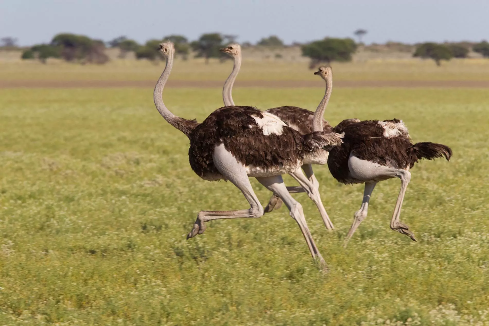

curiosidades
nós avestruzes somos daora, então falarei para vocês alguns fatos sobre nós!
vamos lá:
as avestruzes são conhecidas pelo seu tamanho: somos a maior ave do mundo
por causa do peso e tamanho, não somos capazes de voar
entretanto, possuimos grande força e inteligência
quando ameaçados, temos pernas formidáveis, que podem matar um homem comum
além disso, conseguimos atingir velocidades de até 70km/m com essas pernas, dando passos de 5 metros!
somos originárias da áfrica, e costumamos viver em planícies
nós temos 3 estômagos
o ritual de acasalamento das avestruzes é extremamente longo, chato e retrógado (pouparei-lhes dos detalhes)
nossos ovos são relativamente os maiores de qualquer ave viva no reino animal
ficamos encubados nos nossos ovos de 35 a 45 dias, até nascer
e, não; as avestruzes não enfiam suas cabeças na areia quando se sentem em perigo